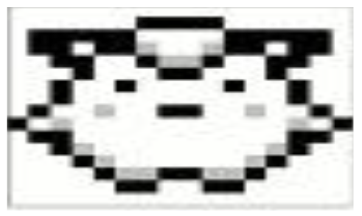
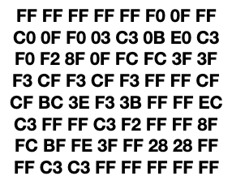
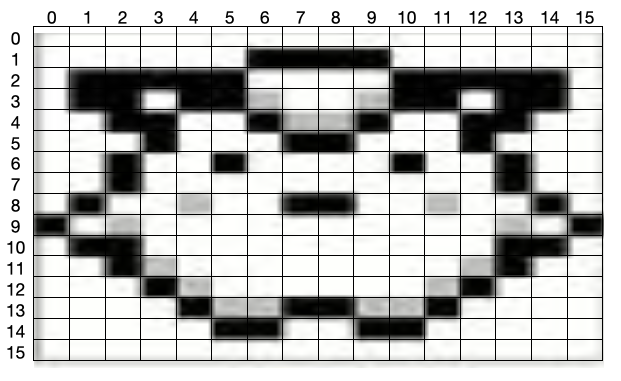
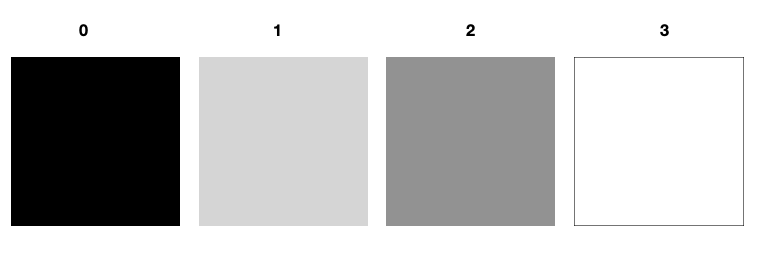
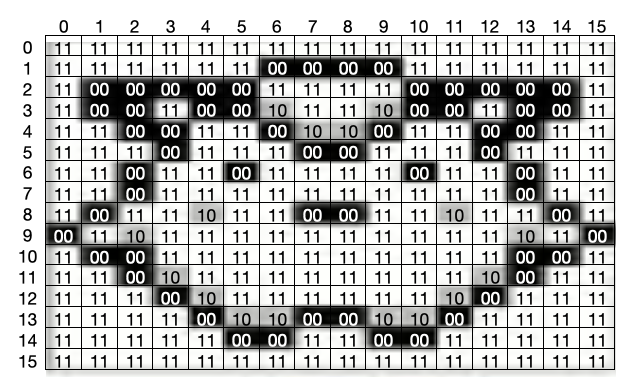
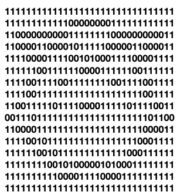
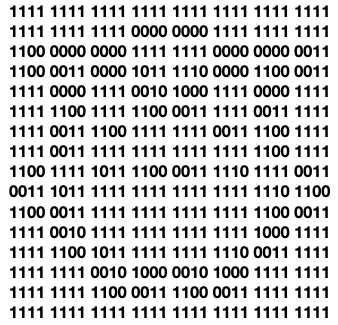
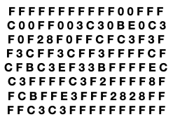

Let's look at a typical example of a gameboy sprite - this little guy is from pokemon:

If we look in memory, the data which represents that pokemon might look like this:

Pretty confusing right? Let's take this step by step and show how this all works.
We can look at our sprite like a grid of pixels, where it has an X and a Y coordinate:

Now we can take the colors the gameboy is capable of displaying, and give them numbers to identify them (just like how paint by numbers works!).

Now, let's fill in that grid with the numbers corresponding with the colors of the sprite:

There's no longer a need to show the grid or the sprite, so let's drop them away. We can see there is now just a grid of 0's and 1's. For every 1 there is a transistor with electricity in it, and one without charge for every 0. This is what the gameboy has in memory.

But how did we end up with a grid of letters and numbers before? If the transistors only stores 0's and 1's, and that's all the gameboy can read, why would we have letters?
Those letters are a kind of number encoding called "hexadecimal". There are 3 main systems of numbers that programmers care about: decimal (the base 10 system of counting we use every day), binary (the base 2 system of 0's and 1's that transistors use), and hexidecimal (a base 16 system that can be used to play some tricks in math with binary).
Let's count to 20, 31, and 3 in each of these number systems:
Decimal (Deca means 10)
Base 10 counting
digits span from 0 - 9
0 1 2 3 4 5 6 7 8 9
10 11 12 13 14 15 16 17 18 19
Binary (Bi means 2)
Base 2 counting
digits span from 0 - 1 (each number is often called a 'bit'
0 1
10 11
Hexadecimal (Hexa means 6)
Base 16 counting
digits span from 0 - F
0 1 2 3 4 5 6 7 8 9 A B C D E F
10 11 12 13 14 15 16 17 18 19 1A 1B 1C 1D 1E 1F
As you can see, to count in binary we can just ignore numbers 2 and above. However, because we lose those numbers, we need to start counting in two digit pairs after the number 1 (in decimal, we only need to do that after the number 9)
Meanwhile in hexadecimal, instead of deleting numbers we need to create more. We can do that by using the letters A-F to represnt 10-15 using 1 character. Because we can use a single digit to hold a bigger number, we only need to begin using 2 digits after the number 15 (F).
This number in 3 different counting systems: X X X X X X X X X X X X X X X
15 (decimal)
1111 (binary)
F (hexidecimal)
This is where the magic is - we can use 1 digit in hexadecimal to fully represent 4 bits in binary.
Whenever the gameboy is reading memory or doing a command, everything is done in groups of 8 bits - this is the 'word' size (just like how in english units of language data are broken into words). 8-bit graphics take their name from this memory size!
Therefore, 2 digits in hexadecimal can be used to write down any word in an 8-bit language - and the gameboy is 8-bit :) So to make data shorter and easier to read, programmers often use hexadecimal for their work.
So let's start breaking down that image into hexadecimal. First, we can break it into units of four (4 bits is called a nibble) :

Then, we simply replace each group of 4 bits with their corresponding letters:

And then, we group each 2 letters together to make the sprite encoding we saw before. (this represents 8 bits, and 8 bits -also called 2 nibbles - make a byte!) :